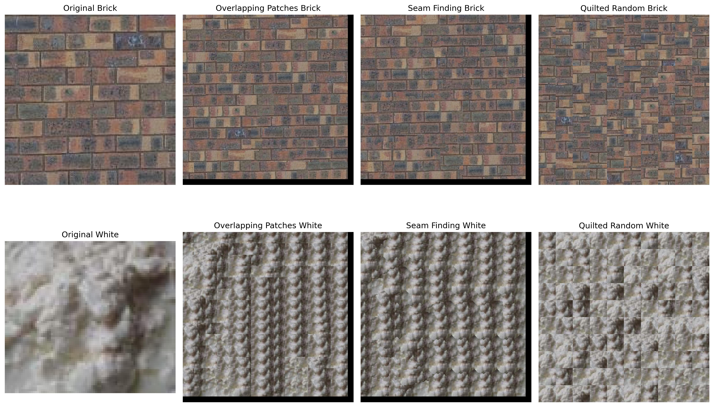

Image Quilting
1. Randomly Sampled Texture
The quilt_random function generates a larger texture by randomly
stitching together small square patches sampled from an input texture.
It begins by initializing a blank output image of the desired size and
determines how many patches will fit in its grid, based on the patch
size. For each patch in the grid, it selects a random starting position
within the texture sample, ensuring the patch fits within the sample's
boundaries. The corresponding patch is then copied into the appropriate
position in the output image. This process is repeated for all patches,
resulting in a new texture that resembles the original but appears
randomized due to the patch sampling.

2. Overlapping Patches
I implement a simple quilting algorithm to create a larger texture from
a given source. First, I choose a random patch from the source texture
to place in the upper-left corner of my output image. Then, I continue
adding new patches that partially overlap with what I’ve already placed.
To ensure the new patches blend well, I measure how similar they are to
the existing output using the sum of squared differences (SSD) for the
overlapping regions. Using my helper functions ssd_patch for efficiently
computing this cost and choose_sample to randomly pick one of the best
low-cost patches, I can gradually fill the entire output. In the end,
this technique helps me synthesize a seamless, larger texture that
visually resembles the original sample.
3. Seam Finding
To enhance the texture synthesis process and remove edge artifacts from
overlapping patches, use the cut function from utils.py to find the
minimum-cost contiguous path for seam carving. The cost of this path is
based on the squared differences between the output image and the newly
sampled patch, summed over RGB channels. I implemented a function called
quilt_cut that seamlessly combines patches from a sample image to
generate a larger output texture. The process involves creating masks to
handle overlapping regions between patches. The function places the
first patch randomly in the top-left corner and then fills the first
column and first row with patches that blend smoothly using vertical and
horizontal seam masks, respectively. Finally, for the interior patches,
it finds candidate patches that match well with both top and left
overlaps, applies vertical and horizontal seam masks to minimize visible
seams, and blends the patches into the output image. The approach
ensures a coherent and visually appealing texture with minimized edge
artifacts.

The illustration below demonstrates the quilt cut process, showcasing
four distinct stages. On the left, the "Reference Patch Overlap" panel
displays the overlap region in the original patch that is being matched.
Next to it, the "New Patch Overlap" panel shows the overlap region of a
new patch with a relatively low SSD (Sum of Squared Differences) cost.
The "Difference with Optimal Seam" panel features a heatmap-like image
with a red line highlighting the optimal seam, indicating the minimum
cost path. Finally, the "Optimal Seam Mask" panel presents a binary mask
where the optimal seam is represented by the black region. This process
ensures minimal difference when quilted together by using the minimum
cost path to select pixels—above the path from the original patch and
below the path from the new patch—resulting in a seamless texture
synthesis.
4. Texture Transfer
I implement texture_transfer, a texture from a sample image is
transferred onto a target image using a patch-based approach. The
process begins by initializing masks for overlap regions and creating an
empty result image. The top-left corner of the result image is
initialized with a random patch from the sample image. The function then
iterates through the target image, finding the best matching patches
from the sample based on a combined cost of overlap and target regions.
The find_best_patch function identifies the most suitable patch using
the Sum of Squared Differences (SSD). The minimal_cut_blend function
blends the new patch into the existing region using minimal cut paths to
reduce seam artifacts. The function processes the image in three stages:
filling the first column, the top row, and the interior patches,
ensuring a seamless texture transfer across the entire image.


Lightfield Camera
1. Depth Refocusing
Depth refocusing is a technique in computational photography that allows
simulating changes in camera focus after an image has been captured.
Using a light field dataset, such as a 17x17 grid of images taken from
slightly different perspectives, this method takes advantage of the fact
that far-away objects show minimal positional variation across images,
while nearby objects vary significantly. By shifting the images
appropriately and averaging them, we can focus on objects at different
depths, making them sharp while blurring others. In my implementation,
the refocus_lightfield function aligns the images in the grid by
calculating horizontal and vertical shifts based on their position
relative to the grid center, scaled by a depth parameter. These shifts
are applied using np.roll, effectively aligning the images to simulate a
specific depth of focus. The shifted images are then averaged to produce
a single refocused image, replicating the effect of depth adjustments
observed in the dataset's online viewer under the 'Full Aperture'
setting.
2. Aperture Adjustment
In computational photography, varying the aperture size simulates the
effect of changing the amount of light entering the camera and altering
the depth of field. A larger aperture gathers more light and results in
sharper focus on objects at a specific depth, while a smaller aperture
reduces the amount of light and increases the overall depth of field. In
the context of light field datasets, this effect can be reproduced
computationally by averaging images from different perspectives. The
aperture_r function implements this concept by simulating varying
aperture sizes using a light field dataset. It creates a 2D grid of
image indices to represent the spatial arrangement of the dataset and
calculates the grid's center as the focal point. Based on the given
aperture radius, the function selects images within a square region
centered around the focal point to form the effective aperture. These
selected images are then averaged to produce a single output image,
replicating the depth-of-field effect for the specified aperture size.
Larger radii simulate larger apertures, allowing sharper focus on
objects at specific depths.
r = 0
r = 3
r = 6
Bells & Whistles: Interactive Refocusing
Interactive refocusing is a computational photography technique that
allows focusing on different depths in an image by aligning and
combining multiple images captured from slightly different perspectives.
In a light field dataset, nearby objects shift significantly across
images, while far-away objects remain relatively static. By aligning the
images based on a specific input point and averaging them, we can
simulate focusing on objects at varying depths, creating a sharp focus
on the desired region while blurring others. Interactive refocusing
involves aligning and averaging images from a light field grid to
simulate focusing on different depths. In the refocus_interactively
function, a reference patch is extracted from the central image of the
grid at a given input point. The function calculates pixel shifts for
all images based on their positions relative to the grid center and a
depth parameter, aligning patches from all images to the reference
patch. It iterates over a range of depths, computing alignment errors to
determine the optimal depth with the lowest error. Using this best
depth, the function aligns all images in the grid and averages them to
produce a refocused image that emphasizes the specified point, mimicking
the effect of a sharp depth of focus.
focuse on the point (1100, 300)
focuse on the point (3100, 700)

Summary
This project explores light field photography, inspired by Ng et al., to
reproduce depth refocusing and aperture adjustment effects using the
Stanford Light Field Archive. In Depth Refocusing, we aligned and
averaged grid images to focus on objects at different depths by
adjusting pixel shifts based on the grid structure and a depth
parameter. In Aperture Adjustment, we simulated varying aperture sizes
by averaging subsets of images around the grid center, mimicking the
effects of shallow or deep depth of field. Additionally, we implemented
Interactive Refocusing, allowing dynamic focus on a user-specified point
by optimizing pixel shifts. This project demonstrated how light fields
enable post-capture adjustments like depth and aperture control,
showcasing the power of computational photography.